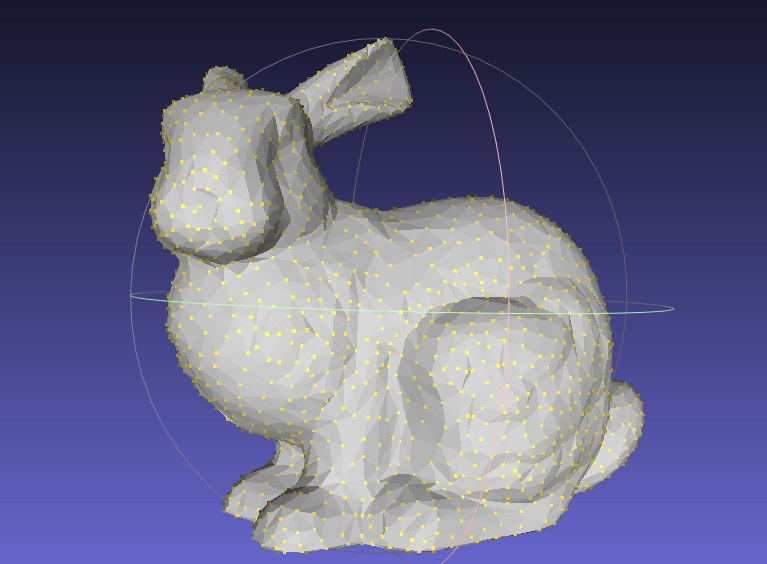
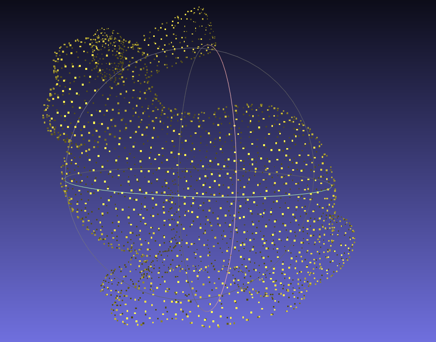
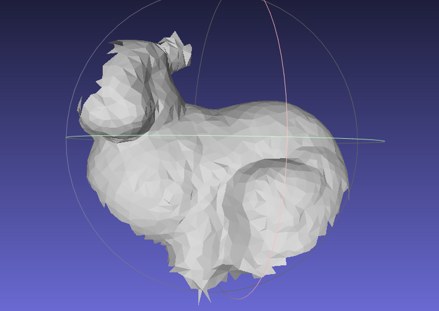
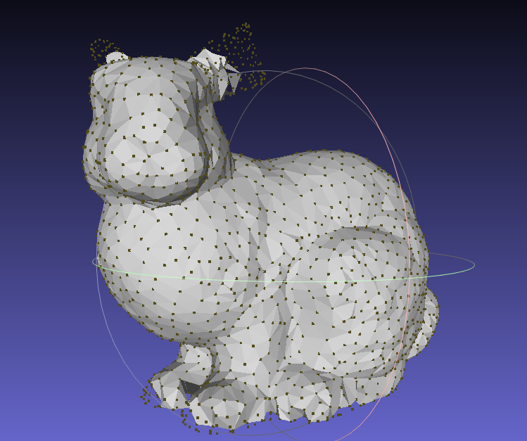
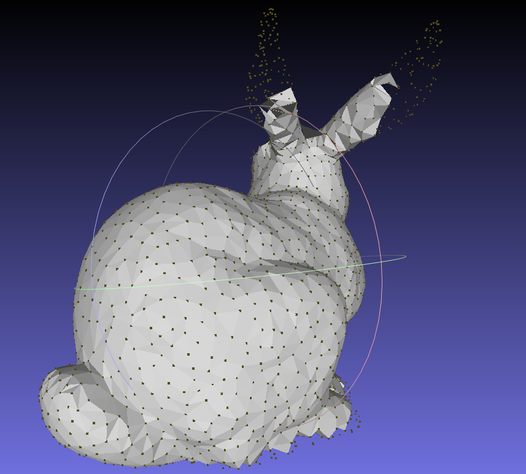
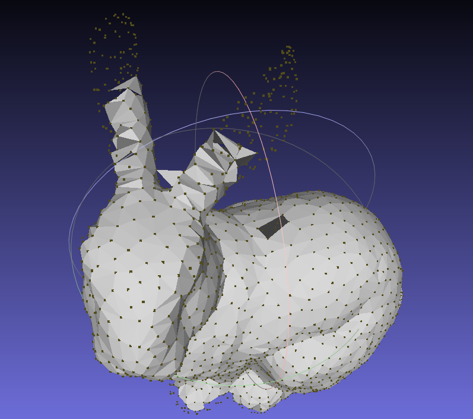
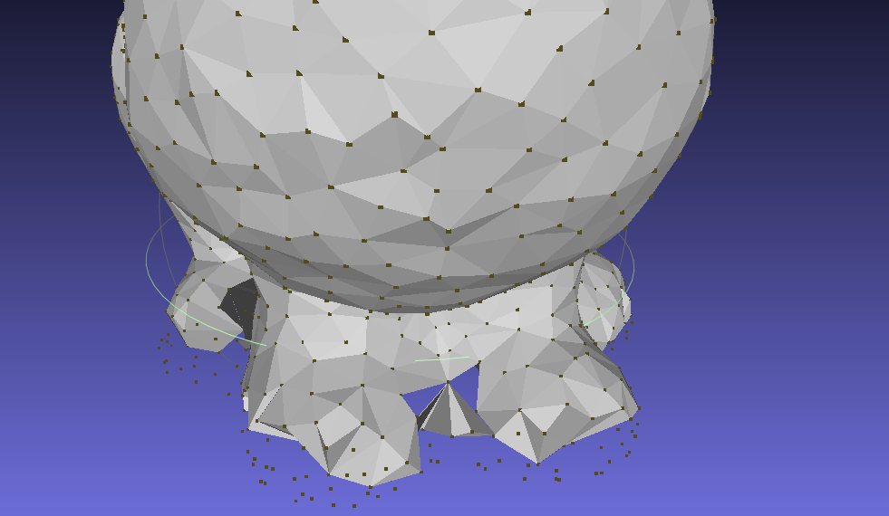
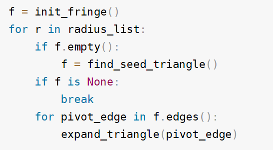
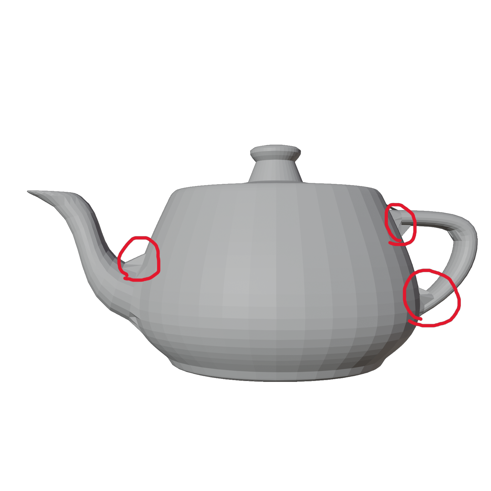
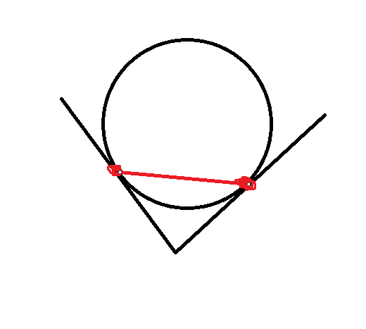

| Yinghao | zhangyinghao@berkeley.edu |
| Yifan Wang | wyf020803@berkeley.edu |
| Tianzhe Chu | chutzh@berkeley.edu |
| Xueyang Yu | yuxy@berkeley.edu |
Our proposed project aims to implement the conversion from point cloud to mesh format using Python. Taking point cloud and vertex normals as input, we will reconstruct a mesh with the same set of vertices and generated faces. Here the vertex normals point to the inside of the mesh. By implementing this conversion process, we aim to enhance the flexibility and compatibility of 3D object representation in various applications, enabling users to work with the format that suits their needs best. We implement the paper of Ball Pivoting Algorithm mentioned in the Final Project Idea.
We firstly use the original mesh as input to generate a point cloud with vertex normals as the input of our algorithm, which is shown in the following figures.
|

|

|
After that, we use the point cloud with vertex normals as input to reconstruct a mesh, which is the most challenging part of this project. The simple idea is that we will use set a hyperparameter r as radius to construct a sphere, which will be "captured" by 3 points, and then we use these points to form a triangular face. Each step by rolling the sphere on the surface of the point cloud, we possibly construct a face (sometimes a face cannot be constructed due to unsatisfied conditions). The following figure shows the result of different number of steps.
|

|

|
Clearly, with more faces generated, the mesh will be more accurate. But we can find even with 4400 steps where our algorithm converges, we still cannot get a perfect mesh. Compared with the original mesh, we can find that the main body, which is smoother and more continuous, is more easy to reconstruct. While the small details, such as the ears or the feet, are more difficult to reconstruct.
|

|

|

|
The algorithm follows from a simple idea: Imagine a ball rolling over the outer surface of the point cloud.
Seed triangle
A ball with a specific radius can be "captured" by three points, i.e. given the radius, we can determine an only sphere (possibly not exist) on the outer surface that passes through these three points. We call this sphere the "captured sphere" of these three points. Suppose we find three points and their captured sphere, such that there is no other point in the sphere, then we can construct a triangular face with these three points. We call this triangle a "seed triangle". We regard seed triangles as part of the final mesh. We implement this part in the same way as the paper does.
Expanding triangles
After we construct a seed triangle, we can expand it by rolling the ball on any edge (u,v) of the triangle on the outer surface of the point cloud. When the ball hit another point w, we say that the ball is captured by the three points u, v, w. And we construct a new triangle (u,v,w) and add it to the mesh. We call (u,v) the pivot edge. We maintain the edges that can be a pivot edge later in a fringe. We only implement a subset of operations to the fringe, specifically, join operation and the first case of glue operation. This is because the other three cases of glue operation are necessary only when we want to reconstruct a mesh with boundary, while our experiments are all on closed meshes.
These are the two core steps of the algorithm. Here we give the pseudo code of the algorithm we implemented. It is slightly different from the paper. The most essential difference is we use a list of radius, instead of only one, which we will explain later.|

|
Radius List
It is obvious that the radius of the captured sphere is a key parameter of the algorithm. If the radius is too small, the ball is likely to fall through the holes of the point cloud instead of rolling on the outer surface. If the radius is too large, in the limit case, infinitely large, the ball becomes a directed plane, and the algorithm will generate the convex hull of the point cloud. Therefore, we begin with a relative small radius, and gradually increase it. The smaller radius may result in many holes on the mesh, which can be filled later by larger radius.
Selection of seed triangle
We use a simple strategy to select the seed triangle. We first select a point p sequentially, and find all points within 2*r of p. We call them the neighbors of p. Then we select a neighbor q of p, and find all points within 2*r of q. We enumerate them as t, and find the captured sphere of p, q, t. If there is no other point in the sphere, we construct a seed triangle (p,q,t). This part is the same with the paper.
Spatial Queries
In selection of seed triangles we need to find all points within 2*r of a point. We use a grid data structure to accelerate this process. We divide the whole space into small cubes with side length 2*r. Then we can say that, the neighbors of a point p must be in the same cube as p, or in the 26 cubes near p's cube. A hash table is used to map a coordinate to a cube. Note that we need to re-build this data structure when the radius changes. This part is the same with the paper.
Finding hit point in expanding triangles
When we expand a triangle (u,v,w) on edge (u,v), we simulate a ball rolling on (u,v) and find the next hit point. Say the center of the captured sphere of u, v, w is c. The paper does not give the details of this part. We implement it in the following way.
We first find all points within 2*r of u and v. For each such point t, we find the captured sphere of u, v, t. Say the center of the sphere is d. We compute the dihedral angle c-(u,v)-d. This angle is the angle that the ball will roll on (u,v) till it hits t. We select the point t with the smallest angle. If the hit point t is not the same as w, we claim that the ball captured by u, v, t contains no other point. Then we construct a new triangle (u,v,t) and add it to the mesh.
Computing the captured sphere
Given three points u, v, w and the radius r, we need to find the center of the captured sphere. The paper does not give the details of this part. We implement it in the following way.
The distances between the center and the three points are all the same, which means the center is on the line perpendicular to the plane (u,v,w) passing through the circumcenter of triangle (u,v,w). We can compute the circumcenter of (u,v,w) by formula. Then we can easily find the "height" of the center above the plane (u,v,w) by Pythagorean theorem. Finally we can find the center by the height and the circumcenter. In implementation we define every triangle to be directed, i.e. the three points are in clockwise order. The sphere must be ABOVE the plane (u,v,w).
Avoiding repeated triangles
Suppose u-v-w is part of the fringe, and we expand on edge (u,v) to hit point w, and then we expand on edge (v,w) to hit point u. Then we will construct two triangles (u,v,w) and (v,w,u), which are the same. This is very likely to happen during the inner loop of the algorithm.
To avoid this, we use the half-edge structure taught in class. We maintain the map from each half-edge to its face. When we expand on an edge, we check whether there is a face containing the halfedge. If there is, we skip the expansion. This part is not in the paper. We implement it by ourselves.
Coordinate normalization
We normalize all the point coordinates to be in the range [0,10]. One reason is that the algorithm is highly based on float number computation and comparison. This operation avoids points with very large coordinates, which may cause precision loss. Another reason is that the algorithm is sensitive to the radius. After normalization, two meshes with approximately the same number of vertices are likely to work well with the same radius. The paper does not mention this. We came up with this idea ourselves.
We misunderstood the vertex normals that an existing package "trimesh" provides. They pointed to the outside of the mesh, which was the opposite of the normals defined in the paper. This caused the mesh to be inside out. The ball was actually rolling inside the mesh. The reason it tooks me so long to find this bug is that the result of the buggy version looks kind of reasonable, especially bunny's buttock and the main body of the teapot. These two parts are convex and very sphere-like, so the ball can roll smoothly inside them and generate a reasonable mesh.
Another problem is that we computed a wrong dihedral angle to find the hit point. The correct angle should be c-(u,v)-d while we computed w-(u,v)-d at first (same notation as Finding hit point in expanding triangles part). This mistake was quite intuitive and only caused problems in some special cases.
Here is the video showing the process of reconstruction from point cloud to mesh:
To address the issues with the milestone, we discovered that the normal vector's direction was incorrect, causing the mesh's outer surface to be inside out. We resolved this problem by correcting the normal vector's direction.
Moreover, we employ the radius list to address the challenge of identifying an appropriate radius for all the meshes. Consequently, we utilize a list to store radius in ascending order and execute the algorithm using each radius in the list. As observed in the video above, the algorithm initially starts with a small radius, resulting in numerous holes in the mesh due to insufficient coverage. However, as the radius gradually increases, these blank spaces are progressively filled.
All our visualization results can be found in the following link. We store screenshots and videos for different shapes of point clouds including bunny, teapot and cow. Full Visualization Results Link
Limitations of Ball Pivoting Algorithm
We can see the reconstruction of teapot:
|

|

|
We can see the red circles in the image above. It illustrates that our algorithm cannot deal with the corners in the mesh. The reason is that the ball cannot roll into the corner and a face is created aobve the corner.
As a takeaway, when we implement an algorithm, we should always add unit tests to make sure the result is what we expect, especially when using a third party package. It is much time-consuming to debug previous stages after we find problems in final results.
While for the general point2mesh task, we think it interesting and worth to devote our efforts. In a higher level, it's a perfect chance to dig into the area via searching for implementable methods to tackle a specific graphics task. Meanwhile, during the process, we find that some elegant algorithms often start from a simple heuristic, i.e. the one we implement, and oftentimes they work surprisingly well. Despite the hard debugging time, we still enjoy the process of implementing the algorithm and the final results.
| Yinghao Zhang | Built codebase from scratch, debugged, performed experiments, rendered images and videos showing the result, composed the technical approach part of this website. |
| Yifan Wang | Mainly construct the milestone and final web page |
| Tianzhe Chu | Composing slides, videos, part of webpage content, polishing up words and webpage style |
| Xueyang Yu | Web construction |